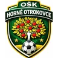

Návrh webu · nie je to oficiálna stránka klubu
U11 B Prípravka
Prípravka U11 ObFZ Trnava
Posledný zápasU11 B Prípravka

OŠK Horné Otrokovcedomáci–
 PFK Piešťany U11 Bhostia
PFK Piešťany U11 BhostiaVýsledky prípraviek sa nezapisujú
Prípravka U11 ObFZ Trnava, 9. kolo · OŠK Horné Otrokovce · 20 divákov
Výsledky prípraviek sa nezapisujú, rozpis zápasov je nižšie.
Zápasy do kalendára
Súpiska
Hráči, ktorí v kalendárnom roku 2026 nastúpili alebo boli v nominácii na zápas (podľa Sportnetu). Pri mládeži uvádzame len mená.
Brankári
- 1Stefan Ivanov, číslo 1
- Dávid Kravárik
- Simon Valko
Obrancovia
- 56Max Bílik, číslo 56
- 25Léo Croisy, číslo 25
- 17David Čellár, číslo 17
- 4Adam Helbich, číslo 4
- 57Marián Hlavatovič, číslo 57
- 28Matias Hlista, číslo 28
- 21Lukáš Jankulár, číslo 21
- 27Hugo Keresteš, číslo 27
- 15Kristián Krajčo, číslo 15
- 55Dominic Marcus Lehuta, číslo 55
- 73Lukáš Mišura, číslo 73
- 48Richard Prištic, číslo 48
- Lucas Švestka
Stredopoliari
- 39Vincent Tomáš Borovský, číslo 39
- 50Mário Čunčík, číslo 50
- Adam Hadviga
- 35Hubert Hanuska, číslo 35
- 3Marco Kadlíček, číslo 3
- 49Tomáš Krištof, číslo 49
- 18Damir Miroshnychenko, číslo 18
- 9Šimon Pánik, číslo 9
- 16Matej Puček, číslo 16
- 42Tobias Tonkovič, číslo 42
- 5Šimon Vrábel, číslo 5
Útočníci
- 47Matej Ondreáš, číslo 47
- 19Matias Pucheľ, číslo 19
- 10Patrik Radošovský, číslo 10
- 11Benjamín Skóra, číslo 11
- 58Samuel Šranko, číslo 58
Realizačný tím
- TrénerAnton Pánik
- Asistent tréneraPatrik Radošovský
- Vedúci mužstvaMichal Beňo
- LekárJán Stachura